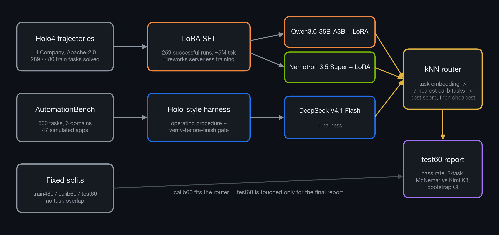
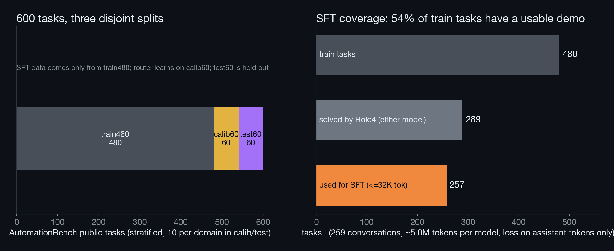
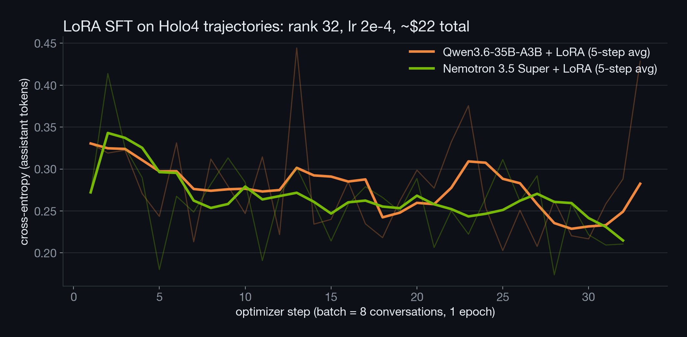
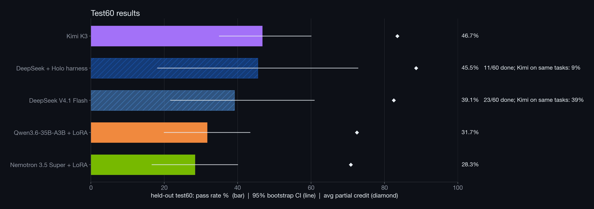
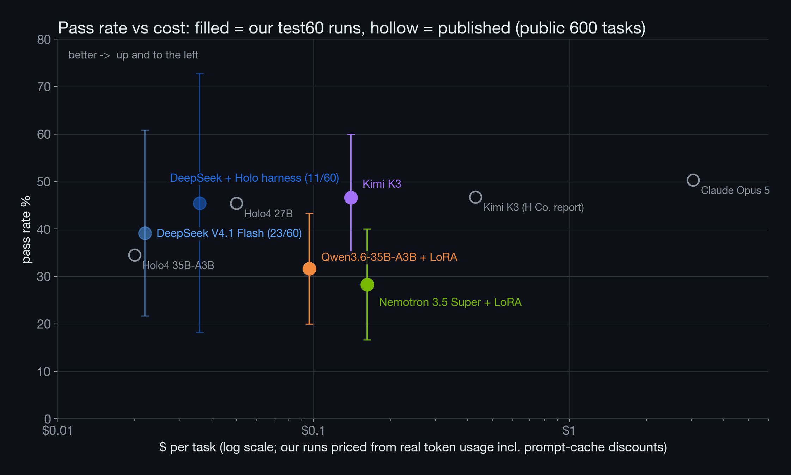
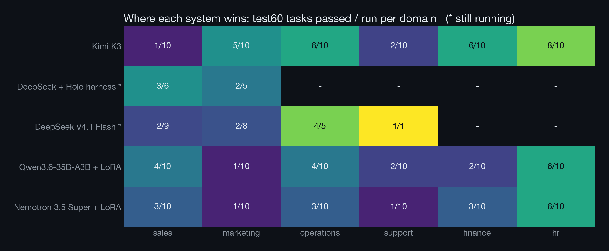
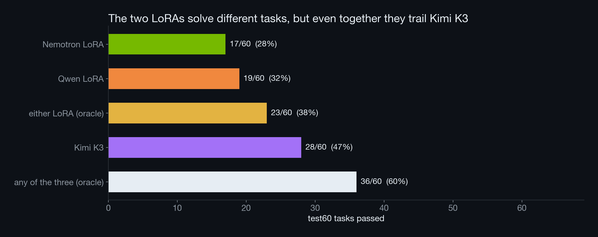

Holo4-style agents on Zapier's AutomationBench: fine-tuned open models, a Holo-style harness, and a learned per-task router, all served on Fireworks.
api_search over 758 endpoints, api_fetch, and base64_encode. It gets at most 50 steps.Hard because the context is spread out: corrections hide in Slack, policies in Drive, and stale rows in Sheets.
| Model | Pass | $/task |
|---|---|---|
| Claude Opus 5 | 50.3% | $3.05 |
| Kimi K3 | 46.7% | $0.43 |
| Holo4 27B (H Company) | 45.4% | $0.05 |
| Holo4 35B-A3B | 34.5% | $0.02 |
Holo4 shows that a small trained model can come close to the frontier at about 1/60 of the cost. That's our inspiration.



The first time the model tries to stop, the harness injects a checklist alert. The model must re-read the request and policies and check the final state with read calls.
In the Kimi smoke run, Kimi missed a Slack correction ($12,340.50 → $11,340.50) and shifted columns in a sheet. That's 3/5 assertions lost on one task, from process errors rather than a lack of knowledge.




12,450.00 when it expects 12,450, while Gmail and Sheets accept it. Don't pad amounts with ".00" in Slack.python3 slides/make_figures.py rebuilds every chart and number in this deck from runs/.
Code: github.com/abhishm/fireworks-buildathon-holo4